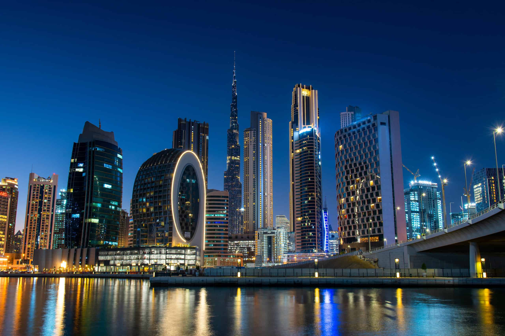

South Island, New Zealand
The South Island of New Zealand is renowned for its mountains, lakes and glaciers. The Southern Alps, home to 3,724m-high Aoraki Mt. Cook, run along the entire length of the island. In the southwest is Fiordland National Park, with steep-sided Milford Sound. In the north is Abel Tasman National Park, known for its trails and ocean kayaking. Queenstown is famed for adventure sports like bungee jumping and skiin The Island is well-known for its lakes, glaciers and lush green mountains. The Southern Alps can be found here as well as many national parks and reserves. New Zealand's South Island is now booming because of all the wonderful opportunities that it offers to its tourists Like many other countries, New Zealand bears the scars of colonization with a society almost entirely composed of immigrants. Kiwis however, don't delve in the past. They are open-minded, friendly and welcoming of other nationalities and cultures.
Paris, France
Paris, France's capital, is a major European city and a global center for art, fashion, gastronomy and culture. Its 19th-century cityscape is crisscrossed by wide boulevards and the River Seine. Beyond such landmarks as the Eiffel Tower and the 12th-century, Gothic Notre-Dame cathedral, the city is known for its cafe culture and designer boutiques along the Rue du Faubourg Saint-Honoré. Paris is one of the most expensive cities to visit in Europe. Whilst there are cheap and free activities, the city is famous for its art galleries and fine dining that you won't want to miss completely when visiting Paris. September and October are arguably the best months to be in Paris — a brisk breeze seeps into the air, Paris Fashion Week is in full force, and turning leaves line the city's most scenic jardins. Finally, November and December bring seasonal cheer, French delicacies, and galette des rois in shop windows.

Bora Bora, French Polynesia
Bora Bora is a small South Pacific island northwest of Tahiti in French Polynesia. Surrounded by sand-fringed motus (islets) and a turquoise lagoon protected by a coral reef, it’s known for its scuba diving. It's also a popular luxury resort destination where some guest bungalows are perched over the water on stilts. At the island's center rises Mt. Otemanu, a 727m dormant volcano. Bora Bora is world-famous for its vibrant turquoise lagoon, soft, white sandy stretches of beach and luxurious resorts. With such a dreamlike setting, this magical island is, unsurprisingly, a great spot to plan a getaway.
Dubai, United Arab Emirates
Dubai is a city and emirate in the United Arab Emirates known for luxury shopping, ultramodern architecture and a lively nightlife scene. Burj Khalifa, an 830m-tall tower, dominates the skyscraper-filled skyline. At its foot lies Dubai Fountain, with jets and lights choreographed to music. On artificial islands just offshore is Atlantis, The Palm, a resort with water and marine-animal parks.Dubai is, in fact, one of the safest Middle Eastern cities for tourists. Its stricter laws mean that crime is kept to a minimum, and many tourists feel much safer in Dubai than they do in other parts of the globe.
Maldives
The Maldive Islands are a series of coral atolls built up from the crowns of a submerged ancient volcanic mountain range. All the islands are low-lying, none rising to more than 6 feet (1.8 metres) above sea level. Barrier reefs protect the islands from the destructive effects of monsoons. The rainy season, from May to August, is brought by the southwest monsoon; from December to March the northeast monsoon brings dry and mild winds. The average annual temperature varies from 76 to 86 °F (24 to 30 °C). Rainfall averages about 84 inches (2,130 mm) per year. The atolls have sandy beaches, lagoons, and a luxuriant growth of coconut palms, together with breadfruit trees and tropical bushes. Fish abound in the reefs, lagoons, and seas adjoining the islands; sea turtles are caught for food and for their oil, a traditional medicine.

Mauii, Hawaii
Maui is an island in the Central Pacific, part of the Hawaiian archipelago. Sprawling Haleakala National Park encompasses the island’s highest peak, volcanic Haleakala, as well as the pools and waterfalls of Ohe’o Gulch, accessed via scenic, winding Hana Highway. The island's 30 miles of beaches include golden-crescent Kapalua, sheltered from strong currents by lava-rock promontories. Maui, known also as “The Valley Isle,” is the second largest Hawaiian island. The island beloved for its world-famous beaches, the sacred ʻĪao Valley, views of migrating humpback whales (during winter months), farm-to-table cuisine and the magnificent sunrise and sunset from Haleakalā.

Turks and Caicos
Turks and Caicos is an archipelago of 40 low-lying coral islands in the Atlantic Ocean, a British Overseas Territory southeast of the Bahamas. The gateway island of Providenciales, known as Provo, is home to expansive Grace Bay Beach, with luxury resorts, shops and restaurants. Scuba-diving sites include a 14-mile barrier reef on Provo’s north shore and a dramatic 2,134m underwater wall off Grand Turk island. For most first time visitors, the best time to visit the Turks and Caicos is February, March, and April. These months offer the best combination of weather, prices, and availability. Late August, September, October, and early November typically have the lowest accommodation and activity rates.
Rome, Italy
Rome is the capital city of Italy. It is also the capital of the Lazio region, the centre of the Metropolitan City of Rome, and a special comune named Comune di Roma Capitale.Rome is a fabulous mix of history, archeology, art, religion and religious culture and delicious food; and it certainly is the most popular place to visit in Italy. Truth is, Rome is a city that hardly leaves you indifferent. It's the kind of place you either love or hate – and most inevitably love it.Overall, locals tell us that Rome is a safe place to visit. In fact, Rome is one of the safest Italian cities to visit—with a lower rate of theft complaints than Milan, Bologna, and Florence.